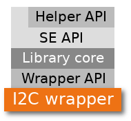

I2C wrapper¶
To be able to communicate with TO, libTO needs to rely on an I2C wrapper, the library layer responsible of I2C communications. On every library Secure Element API function call, the underlying I2C wrapper is used to write the command to TO, and read its response. I2C wrapper depends on target platform I2C hardware.
I2C wrappers are mainly available for MCUs, but it is possible to have PC targets implementation (as CP2112 for Linux and Windows).
Available wrappers¶
The available wrappers implementations are present into the library wrapper directory:
- cp2112.c: Linux Silicon Labs CP2112 wrapper, Use CP2112 I2C adapter on Linux
- cp2112-win.c: Windows Silicon Labs CP2112 wrapper
- raspberrypi.c: RaspberryPi (Raspbian) I2C wrapper, RaspberryPi (Raspbian) I2C configuration instructions
- linux_generic.c: Linux generic I2C wrapper, Use Linux generic I2C wrapper
If the wrapper you need is not already available, you can implement your own for your platform by following I2C wrapper implementation guidelines.